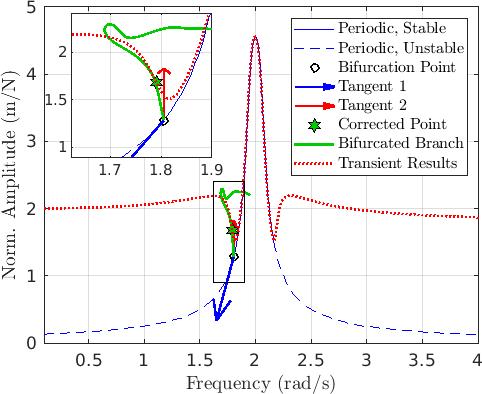

Implementation and Validation of the Fokker-Planck Equation for Narrow-band excitation
1. Lock-in Lock-off Paper
I was considering the slow flow equations to see if we can use them for branch-switching
It looks like this offers a great way of detecting bifurcation but not of giving a good search direction.
This is consistent with the observations with the analytical example I had considered earlier
